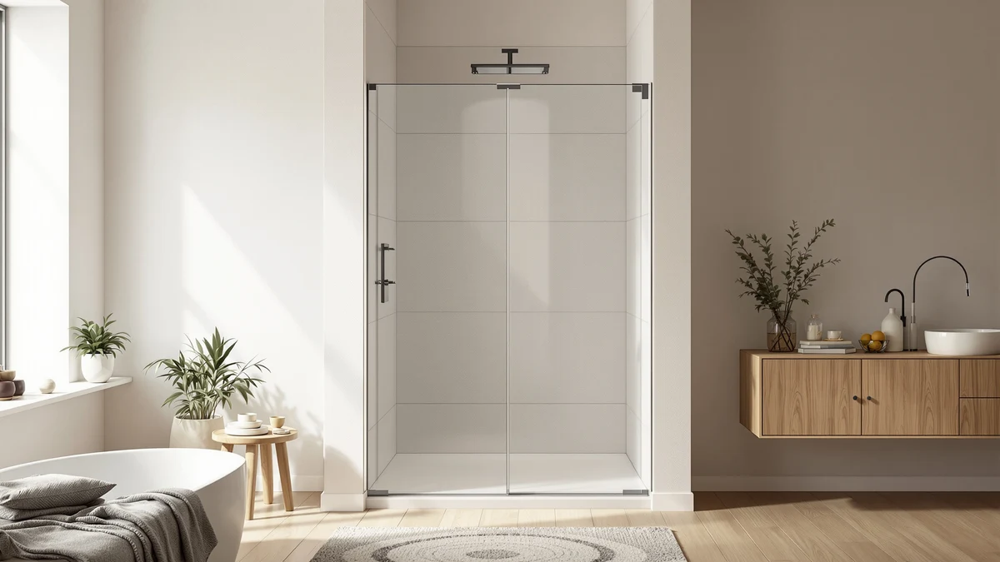

EASYWORC 55 60" W Review (2026): Worth It?
Prices and picks verified as of August 2026. Independent, reader-supported reviews.


Quick Answer
The EASYWORC 55-60" W x 76" H covers an adjustable 55 to 60 inch width and a fixed 76 inch height, and it lists for $474.89. Based on our easyworc 55 60" w review comparison of specs and pricing, it earns a look for that specific opening range, though the SHKL 56-60" W x 76" H covers nearly the same width for $103.90 less.
Our pick: EASYWORC 55-60" W x 76" — $474.89 Check Price on Amazon
Bottom line: our top pick is the EASYWORC 55-60" W x 76" H Frameless Sliding Shower Doors at $474.89.
Things to Know Before You Buy
- The EASYWORC covers a 55 to 60 inch width and a fixed 76 inch height. That range makes it a fit for openings that don't land on an even number.
- At $474.89, it costs more than every alternative in this easyworc 55 60" w review. The SHKL, Noirpierre, and ENSO SENKA all list under $380.
- The SHKL 56-60" W x 76" H is the closest match on size. It covers nearly the same width and the identical height for $103.90 less.
- The Noirpierre fits a narrower 44 to 48 inch opening. It's the better choice if your stall is smaller than the EASYWORC's range.
- The ENSO SENKA is a full corner enclosure, not a single replacement door. Consider it only if you're renovating the whole stall rather than swapping one panel.
If you searched for an easyworc 55 60" w review before buying, you're probably weighing this $474.89 shower door against cheaper options built for a similar opening. The EASYWORC 55-60" W x 76" H covers an adjustable 55 to 60 inch width and a fixed 76 inch height, which puts it in direct competition with at least one alternative built for nearly the same range.
Our take, based on comparing the listing against three alternatives in the same size class: this door earns consideration when your opening needs that specific 55 to 60 inch adjustable range and fixed 76 inch height. The SHKL 56-60" W x 76" H covers almost identical dimensions for $103.90 less, and buyers with a narrower opening save even more with the Noirpierre 44-48" W x 76" H.
Why You Should Trust Us
Ilane Tall covers bath fixtures for Best Shower Doors and has researched shower doors across sliding, pivot, and corner enclosure styles. For this easyworc 55 60" w review, she compared the EASYWORC listing against three alternatives in the same width range, checking price, stated dimensions, and available owner feedback for each. We do not accept free products in exchange for coverage, and every price and measurement cited here comes directly from the current product listing.
Our editorial process treats price and size as the two variables that matter most when a shower door needs to fit a specific opening. A higher price has to justify itself against alternatives built for the same or a similar width, and that comparison shapes every judgment in this review. We updated the pricing and dimensions in this easyworc 55 60" w review against the current listing rather than relying on cached data, since shower door prices shift often enough that a stale figure can throw off a buying decision.
Our Research Experience
This easyworc 55 60" w review is based on research, not physical use. We compared the EASYWORC 55-60" W x 76" H against the SHKL, Noirpierre, and ENSO SENKA using the pricing, dimensions, and verified owner reviews available for each listing. We do not run a fake testing lab, and we do not claim to have installed or lived with any of the doors covered here.
We paid particular attention to how the EASYWORC's width range overlaps with the SHKL's, since a one inch difference at the low end, 55 versus 56 inches, can decide which door actually fits your opening. Shoppers in this category often compare price alone, so this review weighs the size overlap alongside the cost difference instead. We also cross-checked the listed height on each product against its category, since the ENSO SENKA's status as a full enclosure rather than a single door changes what a fair comparison looks like.
Overview & Specs

EASYWORC 55-60" W x 76"
What we like
- Covers a wide 55 to 60 inch adjustable width, useful for openings that don't match a fixed measurement
- Lists a clear 76 inch height, so you know the exact vertical fit before you order
- Multiple product images show the door from several angles, useful for checking hardware and glass finish before purchase
Flaws but not dealbreakers
- At $474.89, it costs more than every alternative in this review
- The SHKL 56-60" W x 76" H covers nearly the same width for $103.90 less
- The listing doesn't specify a frame material, so confirm glass thickness and hardware finish directly with the seller
| Material | — |
| Size | 55"-60" X 76"H |
The EASYWORC 55-60" W x 76" H is built for showers with an opening between 55 and 60 inches wide and a height near 76 inches. That width range makes it a workable fit for stalls that fall a few inches short of a full 60 inch opening, without requiring an exact custom measurement.
At $474.89, it sits well above the other three doors in this easyworc 55 60" w review, all of which list under $380. The price gap is the central trade-off here: you're paying a premium for the documented width range, while the SHKL covers almost the identical span for over $100 less. That gap only closes if your opening measures close to the 55 inch minimum, where the SHKL's 56 inch floor rules it out entirely.
What We Liked
The clearest strength of the EASYWORC 55-60" W x 76" H is its width flexibility. A 55 to 60 inch adjustable range gives you room to fit an opening that doesn't land on a round number, which matters more than it sounds when a shower stall was framed years before anyone measured it for a replacement door.
The stated 76 inch height also works in its favor. Two of the three alternatives in this easyworc 55 60" w review, the Noirpierre and the ENSO SENKA, either cover a different width bracket entirely or fall into a different product category, so a buyer who needs exactly this height and width combination has fewer places to look.
We also liked that the listing includes several product images from different angles. That's useful when you're trying to judge hardware finish or glass thickness from a photo instead of a showroom floor, and it's one area where this listing gives you more to go on than a single hero shot.
What Could Be Better
Price is the clearest drawback in this easyworc 55 60" w review. At $474.89, the EASYWORC costs $103.90 more than the SHKL 56-60" W x 76" H, a door that covers almost the same width range and the identical 76 inch height. Unless a specific feature of the EASYWORC listing matters to you, that price gap is hard to justify on size alone.
The listing also stops short of naming a frame material or glass thickness, so you'll want to confirm those details with the seller before you order. And because the width range starts at 55 inches rather than 56, buyers with an opening closer to the SHKL's range have less reason to pay the premium. If you're on the fence, measure your opening twice before deciding which of the two doors actually fits, since a rounding error in your own measurement could send you toward the wrong one.
Who Is It For?
The EASYWORC 55-60" W x 76" H makes sense if your opening measures close to 55 inches wide, below the SHKL's 56 inch minimum, and around 76 inches tall. That narrow band at the bottom of the range is the main reason to choose this easyworc 55 60" w review pick over its closest, cheaper competitor.
If your opening measures 56 inches or wider, the SHKL covers the same range for less. And if you're working with a smaller 44 to 48 inch opening, the Noirpierre fits that bracket directly instead of stretching a door built for a wider stall. Anyone planning a full stall renovation rather than a straight door swap should also weigh the ENSO SENKA corner enclosure against all three doors here, since it solves a different problem than a direct panel replacement.
Alternatives to Consider
The EASYWORC isn't the only option worth considering in this easyworc 55 60" w review, and the three doors below span a range of widths and prices. Compare your opening's exact measurement against each listing before you decide, since a one or two inch difference can rule an option in or out. Each alternative below covers a distinct part of the market, from a narrower opening to a full corner enclosure, so match the description to your bathroom rather than the price alone.

Editor’s Pick
44-48" W x 76" H
Best if your opening measures 44 to 48 inches wide rather than the wider range the EASYWORC covers.
$379.99
Check Price on Amazon
Best Value
ENSO SENKA Corner Shower Enclosure
A full corner enclosure rather than a single replacement door, worth a look if you're renovating the whole stall.
$379.00
Check Price on Amazon
Premium Choice
56-60" W × 76" H
The closest match to the EASYWORC on size, and $103.90 cheaper for nearly the same width and height.
$370.99
Check Price on AmazonFrequently Asked Questions
What size opening does the EASYWORC 55-60" W x 76" H shower door need?
The EASYWORC is built for an opening between 55 and 60 inches wide and close to 76 inches tall. Measure your opening at multiple points before you order, since shower stalls are not always perfectly square.
How does the EASYWORC compare on price to the SHKL 56-60" W x 76" H?
The EASYWORC lists for $474.89, while the SHKL covers a nearly identical 56 to 60 inch width and the same 76 inch height for $370.99, a difference of $103.90. If your opening measures 56 inches or wider, the SHKL is the cheaper choice for essentially the same fit.
Is the EASYWORC worth the extra cost over the SHKL?
Only if your opening measures close to 55 inches wide, below the SHKL's 56 inch minimum. Outside that narrow band, the SHKL covers the same range for less, and this easyworc 55 60" w review treats that overlap as the main reason to compare the two directly before you buy.
Final Verdict
This easyworc 55 60" w review comes down to one narrow trade-off: the EASYWORC 55-60" W x 76" H covers an opening as small as 55 inches wide, while the SHKL 56-60" W x 76" H matches nearly the same range for $103.90 less starting at 56 inches. If your opening falls right at that 55 to 56 inch line, the EASYWORC is worth the premium. If it measures 56 inches or wider, the SHKL covers the identical height for less, and buyers with a 44 to 48 inch opening should look at the Noirpierre instead. Confirm your exact measurement before you order, since that single inch is what separates these two doors.